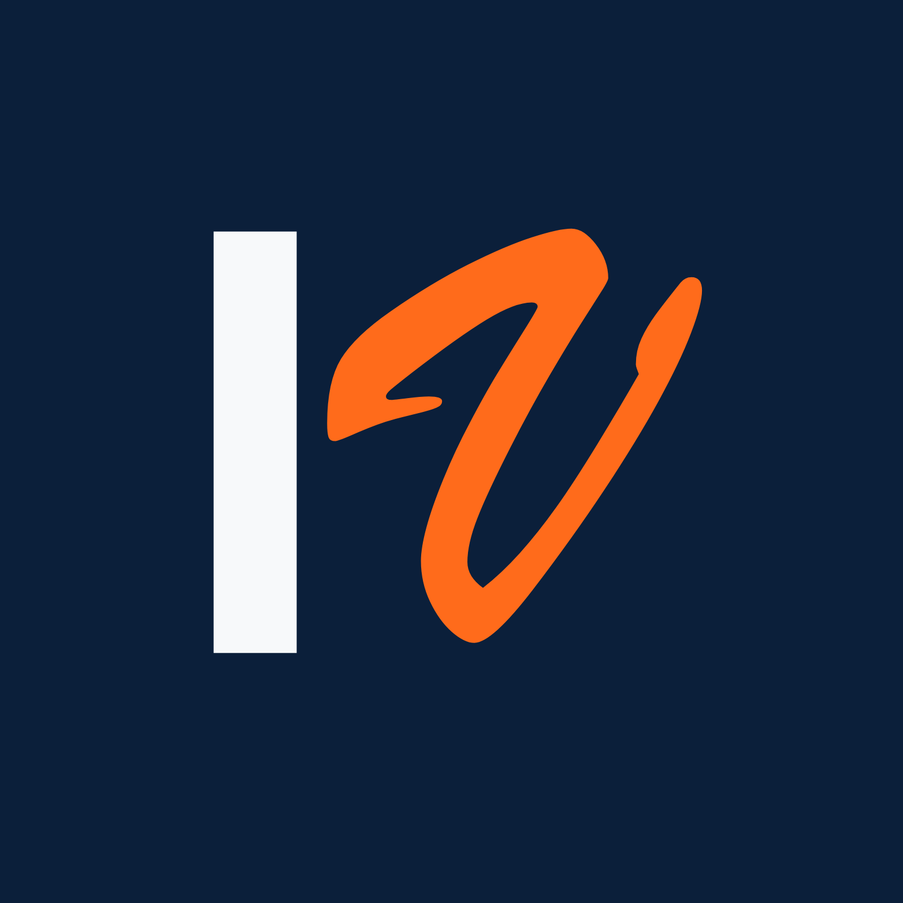

?
فين المشكلة؟
نفهم الوضع الحالي ونحدد التحدي التسويقي الأساسي بدل معالجة الأعراض فقط.
بساعد أصحاب المشاريع يفهموا وضع التسويق عندهم، يرتبوا أولوياتهم، ويحددوا الخطوات اللي تستحق التنفيذ بدل القرارات العشوائية.

أحيانًا المشكلة مش في إنك محتاج تعمل أكتر، لكن في إنك محتاج تعرف الأول إيه اللي يستحق تركيزك فعلًا.
نفهم الوضع الحالي ونحدد التحدي التسويقي الأساسي بدل معالجة الأعراض فقط.
نرتب المشاكل والفرص حسب أهميتها بدل محاولة تنفيذ كل حاجة في نفس الوقت.
نخرج بخطوات عملية واضحة تقدر تبدأ منها بعد الجلسة.
جلسة أونلاين لمدة 60 دقيقة نراجع فيها وضع نشاطك التسويقي، نفهم المشكلة الأساسية، ونرتب الأولويات والخطوات المناسبة للمرحلة الحالية.
نموذج تشخيص قبل الجلسة
مراجعة بيانات نشاطك قبل الموعد
جلسة أونلاين لمدة 60 دقيقة
ملخص التشخيص خلال 24 ساعة
3 خطوات عملية على الأقل
رحلة بسيطة هدفها إن وقت الجلسة يتركز على التشخيص واتخاذ قرارات أوضح.
اختار الموعد المناسب وأكمل الحجز أونلاين.
شاركني المعلومات الأساسية عن نشاطك قبل موعد الجلسة.
نراجع الوضع الحالي ونحدد المشاكل والأولويات مع بعض.
تستلم خلال 24 ساعة أهم النقاط والخطوات اللي تقدر تبدأ بيها.
مؤسس ايدياز فيرف، وبطوّر خبرتي في التسويق من خلال التعلم والتطبيق العملي والعمل على مشروعات حقيقية.
طريقتي بتبدأ بمحاولة فهم المشكلة قبل اقتراح الحل، لأن مش كل نشاط محتاج نفس الأدوات، ومش كل مشكلة محتاجة خدمة جديدة.
جلسة التشخيص جزء من المرحلة الحالية اللي بطور فيها منهج عملي يساعد أصحاب المشاريع على ترتيب قراراتهم التسويقية بشكل أوضح.
تابع رحلتي على LinkedIn ←لأصحاب المشاريع والأنشطة القائمة اللي عندهم مشكلة أو قرار تسويقي محتاج وضوح وترتيب للأولويات.
لا. الجلسة مخصصة للتشخيص وترتيب الأولويات وتحديد الخطوات القادمة. أي خدمات تنفيذية يتم الاتفاق عليها بشكل منفصل.
خلال 24 ساعة هتستلم ملخصًا لأهم النقاط والأولويات، بالإضافة إلى 3 خطوات عملية على الأقل تقدر تبدأ بيها.
الجلسة أونلاين ومدتها 60 دقيقة. بعد الحجز تختار الموعد المناسب وتستكمل الخطوات المطلوبة قبل الجلسة.
لا. الجلسة خدمة استشارية وتشخيصية، والتوصيات تعتمد على المعلومات وظروف النشاط ولا تمثل ضمانًا لنتيجة تسويقية أو مالية محددة.
احجز جلسة التشخيص التسويقي ضمن النسخة التجريبية لأول 5 مشاريع.
احجز جلستك بـ250 جنيه